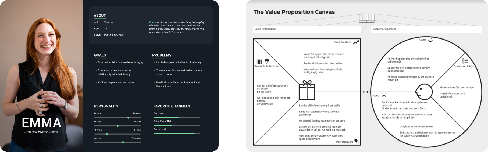

Norrbyskär
Client
Umeå Kommun
Role
UX/UI Design
Tools
Adobe XD, Mural
DEFINING THE PROBLEM
Umeå municipality wanted to develop the island Norrbyskär, make the place a more attractive destination and create better prerequisites for other businesses or associations to operate on the island. With the help of a digital tool, in an entertaining and innovative way, the municipality wanted to spread the history of Norrbyskär and make the visit more interactive than before. We had to design an experience that would gather all the information you need as a visitor and create an entertaining way to show the rich history of the island. To make it easier and more fun to visit Norrbyskär.
UNDERSTANDING THE USERS
GATHER ALL INFORMATION
Where is it possible to rent bikes, canoes, etc. What kinds of hikes and length. Places to eat, stay, picnic, camp and take a swim.
INTERACTIVE MAP
So the user easily can get an overview of the island and everything you can do, find what it's looking for and how to get there.
MEET THE HISTORY
Get the history in different kinds of ways so the user can choose what suits them best.
IDEATION
The lo-fi prototype was a basic version of the product or service that was created to test the concept and gather initial feedback from users.
Once feedback had been gathered from users, a mid-fi prototype was created. This prototype was a more advanced version of the product or service, with additional features and functionality added based on the feedback received.
The mid-fi prototype was tested with users to gather additional feedback and make further improvements before moving on to the final development stage. This process of iterative design and user testing helped to ensure that the final product would meet the needs and expectations of the intended audience.
FINAL SOLUTION
After the mid-fi prototype was tested with users and further feedback was gathered, a hi-fi (high-fidelity) prototype was created. This prototype was a fully functional and polished version of the product, with all the features and design elements that would be included in the final product.
The hi-fi prototype was often created using Adobe XD. The hi-fi prototype was also tested with users to gather final feedback and make any necessary refinements or improvements before the final product was launched. This testing phase was crucial for identifying and resolving any remaining issues or bugs, and ensuring that the final product met the highest standards of quality and user experience.
WHAT I LEARNED
Working on this project was a valuable learning experience for me, and helped me to develop a range of important skills and competencies. One of the key areas where I gained new skills was in agile project management. I learned how to break down complex projects into smaller, more manageable tasks, and how to prioritize and schedule these tasks in a way that maximized efficiency and productivity.
User testing was also a critical part of the project, and I gained valuable experience in designing and conducting user tests, analyzing the results, and using them to inform design decisions.
Teamwork was another important aspect of the project, and I learned how to work effectively with others, communicate clearly and collaboratively, and how to adapt to changing circumstances and priorities.
Overall, working on this project was a challenging and rewarding experience, and I feel that I have developed a range of valuable skills and competencies that will serve me well in future projects.